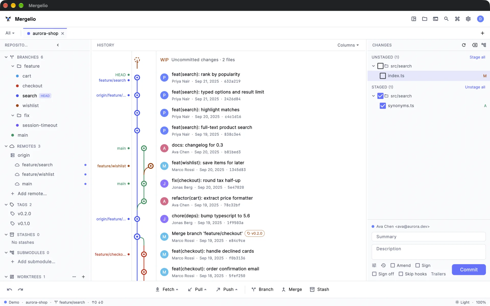
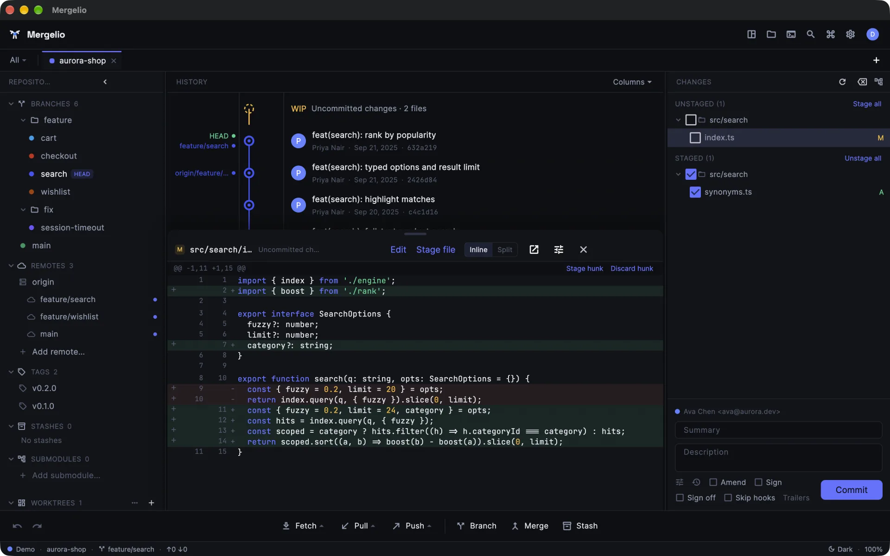

Commit graph
History drawn in lanes, with ref pills, keyboard navigation, author and date filters, and search by message or by the code a commit changed.
Mergelio is free and open source, for macOS, Windows and Linux. You get a commit graph, line-by-line staging, a three-way merge tool, interactive rebase and undo for almost everything. No account, nothing sent home.
All platforms · BSD-3-Clause · Requires Git

History drawn in lanes, with ref pills, keyboard navigation, author and date filters, and search by message or by the code a commit changed.
Stage or discard by file, hunk or a run of lines. Side-by-side or inline diffs with word-level highlights, syntax colours and image diffs.
Ours, result and theirs side by side. Resolving only stages the file: you review it and commit or continue yourself.
Reorder, reword, squash, fixup and drop commits. Autosquash, exec and break steps, and stacked branches move along.
Reflog-backed undo and redo for commits, merges and rebases. reset --hard stashes your work first, and an operation journal survives crashes.
Pull and merge requests with CI status, plus issues, next to your branches. Read-only: tokens go through your git credential helper.
Browse the project, edit files in tabs with find and replace, and keep a real system-shell terminal docked under the repository.
No account, no telemetry unless you turn it on, and update checks only if you say yes. Settings stay in a local database.
Also: commit and tag signature checks, blame and line history, worktrees, git notes, stashes with undo, profiles with their own SSH keys, a multi-repo dashboard, a command palette, themes, and English and Ukrainian UI. Full feature list →

Released {{DATE}} · Release notes · All releases
Signed and notarized disk image. Open it and drag Mergelio to Applications.
Download .dmgRun the installer. It isn't code-signed yet, so SmartScreen asks first: choose More info → Run anyway.
Download setup.exeMergelio runs the git on your PATH. If you don't have it, install Git first. Each release ships a signed SHA256SUMS.txt; see how to verify a download.